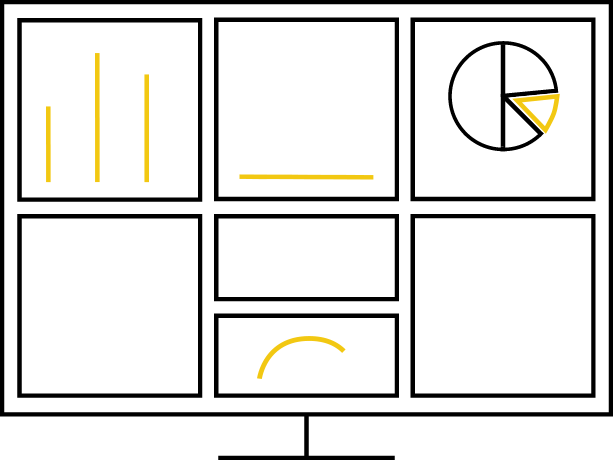

<div class="shaded-background">
<form method="post" novalidate>
  <div id="msform">
    <!-- progressbar -->
    <ul id="progressbar">
      <li style="padding-left:100px;" class="active">Schema Setup</li>
      <li style="padding-left:100px;" ng-class="{'active':pageNumber >= 2}">Rule Mapping</li>
      <li style="padding-left:100px;" ng-class="{'active':pageNumber == 3}" ng-click="setpage(3);getAllTable()">Start Profiling</li>
    </ul>
    <!-- fieldsets -->
    <fieldset ng-show="pageNumber == 1">
      <h2 class="fs-title">Create Schema</h2>
      <h3 class="fs-subtitle">This is step 1</h3>
      <input type="text" name="email" placeholder="Table Name" ng-model="tableSchema.tableName"/>
     
     <div layout="row">
     <span title="add column" style="float:right" ng-click="addNewColumns(tableSchema.columnInfoList)"><i class="fa fa-2x fa-plus-square add-columns"></i></span>
     	<div style="float:left;width:100%" ng-repeat="col in tableSchema.columnInfoList">
      		<input  style="width:50%;padding:5px" type="text" ng-model="col.columnName" name="columnName" placeholder="Column Name" />
      		<select style="padding:5px" ng-model="col.dataType"
              ng-options="opt as opt for opt in supportedDataType">
          	</select>
          	
      	</div>
      </div>
      <input type="button" ng-class="{'action-button-faded':!tableSchema.tableName}" name="next" ng-disabled="!tableSchema.tableName" class="next action-button" value="Next" ng-click="saveNewSchema(tableSchema)"/>
    </fieldset>

    <fieldset ng-show="pageNumber == 2">
      <h2 class="fs-title">Rule Mapping</h2>
      <h3 class="fs-subtitle"><span style="color:gray;font-weight:bold;padding:2px">Table Name:</span>{{tableSchema.tableName}}</h3>
      <!-- <input type="text" name="fname" placeholder="First Name" />
      <input type="text" name="lname" placeholder="Last Name" />
      <input type="text" name="phone" placeholder="Phone" />
      <textarea name="address" placeholder="Address"></textarea>
       -->
       <span title="add rule mapping" style="float:right" ng-click="addNewMapping(ruleMappingList)"><i class="fa fa-2x fa-plus-square add-columns"></i></span>
      <div style="float:left;width:100%" ng-repeat="rule in ruleMappingList">

      		<select  style="width:30%;padding:5px" ng-model="rule.columnId"
              ng-options="opt as opt.columnName for opt in recievedSchema.columnInfoList" value="{{opt.columnId}}">
          	</select>
          	
          	<select  style="width:30%;padding:5px" ng-model="rule.ruleType"
              ng-options="opt as opt for opt in supportedRule">
          	</select>
          	
      		<input style="width:30%;padding:5px" type="text" ng-model="rule.ruleExpression" name="ruleExpresion" placeholder="Rule NLP Expresion" />
          	
      	</div>
      		<input type="button" name="previous" class="previous action-button" value="Previous" ng-click="visitPrevious()" />
      		<input type="submit" name="submit" class="submit action-button" value="Next" ng-click="saveMapping(ruleMappingList);getAllTable()"/>
    </fieldset>
    
    <fieldset ng-show="pageNumber == 3">
      <h2 class="fs-title">Start Profiling</h2>
      <h3 class="fs-subtitle"><span style="color:gray;font-weight:bold;padding:2px">Table Name:</span><span>
      	<select  style="width:30%;padding:5px" ng-model="selectedTableForProfiling"
              ng-options="opt as opt.tableName for opt in allTables">
              <option value="">Please select</option>
          	</select>
      </span></h3>
      
      <div>
      
      </div>
      <input ng-if="!profilingCompleted" type="submit" style="width:200px" name="submit" class="submit action-button" value="Start Profiling" ng-click="startProfiling(selectedTableForProfiling)" />
    	
    </fieldset>
  </div>
</form>
</div>
<style>
@import url(https://fonts.googleapis.com/css?family=Montserrat);
/* css class for the registration form generated errors */

.profilepress-reg-status {
  border-radius: 6px;
  font-size: 17px;
  line-height: 1.471;
  padding: 10px 19px;
  background-color: #e74c3c;
  color: #ffffff;
  font-weight: normal;
  display: block;
  text-align: center;
  vertical-align: middle;
  margin: 5px 0;
}
/*form styles*/

#msform {
  width: 600px;
  margin: 50px auto 550px;
  text-align: center;
  position: relative;
}

#msform fieldset {
  background: white;
  border: 0 none;
  border-radius: 3px;
  box-shadow: 0 0 15px 1px rgba(0, 0, 0, 0.4);
  padding: 20px 30px;
  box-sizing: border-box;
  width: 100%;
  margin: 0 10%;
  /*stacking fieldsets above each other*/
  
  position: absolute;
}
/*Hide all except first fieldset*/


#msform input,
#msform textarea {
  padding: 15px;
  border: 1px solid #ccc;
  border-radius: 3px;
  margin-bottom: 10px;
  width: 100%;
  box-sizing: border-box;
  font-family: montserrat;
  color: #2C3E50;
  font-size: 13px;
}
/*buttons*/

#msform .action-button {
  width: 100px;
  background: #27AE60;
  font-weight: bold;
  color: white;
  border: 0 none;
  border-radius: 1px;
  cursor: pointer;
  padding: 10px 5px;
  margin: 10px 5px;
}

#msform .action-button:hover,
#msform .action-button:focus {
  box-shadow: 0 0 0 2px white, 0 0 0 3px #27AE60;
}
/*headings*/

.fs-title {
  font-size: 15px;
  text-transform: uppercase;
  color: #2C3E50;
  margin-bottom: 10px;
}

.fs-subtitle {
  font-weight: normal;
  font-size: 13px;
  color: #666;
  margin-bottom: 20px;
}
/*progressbar*/

#progressbar {
  margin-bottom: 30px;
  overflow: hidden;
  /*CSS counters to number the steps*/
  
  counter-reset: step;
}


#progressbar li:before {
    content: counter(step);
    counter-increment: step;
    width: 50px;
    line-height: 50px;
    display: block;
    font-size: 15px;
    color: #333;
    background: white;
    border-radius: 30px;
    margin: 0 auto 5px auto;
}

#progressbar li:first-child:after {
  /*connector not needed before the first step*/
  
  content: none;
}
/*marking active/completed steps green*/
/*The number of the step and the connector before it = green*/

#progressbar li.active:before,
#progressbar li.active:after {
  background: #27AE60;
  color: white;
}

.add-columns{
    position: relative;
    top: 3px;
    color: #66ad66;
}

#progressbar li {
    list-style-type: none;
    color: #ffffff;
    text-transform: uppercase;
    font-size: 12px;
    width: 33.33%;
    float: left;
    position: relative;
    
    }
    
    .shaded-background{
    width: 100%;
    height: 100%;
    background: #1a1e217a;;
    padding: 25px;
    }
    .action-button-faded{
        background: #86b59a !important;
    }
</style>